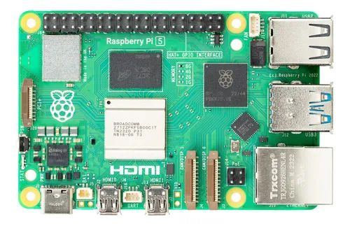
Raspberry Pi 5 · 8 GB
Computador de placa única que executa a interface, o orquestrador, banco local e chamadas aos modelos de IA.
O Talking Buddy é um protótipo de assistente de voz offline: escuta, transcreve, interpreta e responde no próprio protótipo, preservando os dados do usuário.
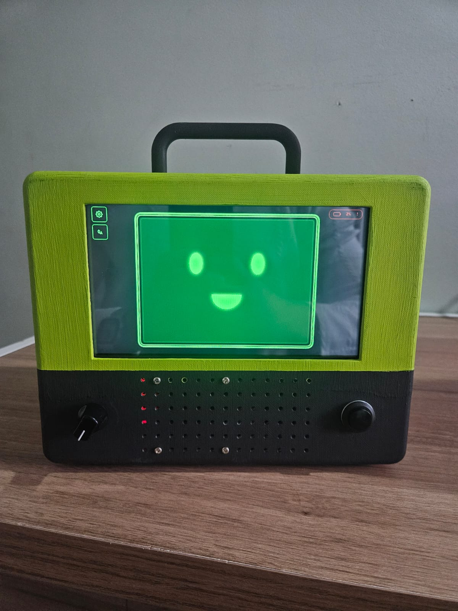
Veja o protótipo físico em operação: ativação por voz, conversa com o avatar, resposta falada e interação pela tela touch.
Demonstração do protótipo físico em operação.
Assistentes de voz comerciais normalmente dependem da nuvem para reconhecer fala, processar linguagem e sintetizar respostas. O objetivo deste TCC foi validar uma alternativa local: um pipeline local de Edge AI, com modelos quantizados e hardware acessível.
Em vez de treinar modelos do zero, o projeto integrou tecnologias maduras em uma arquitetura modular. A placa principal coordena o áudio, a interface touch, perfis por RFID, banco de dados local, memória de conversa e modelos de IA.
Documento completo do TCC publicado para consulta pública.
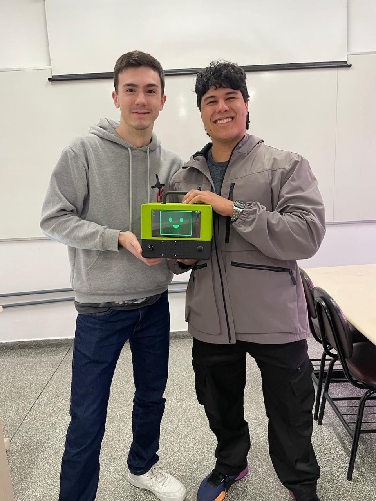
A seleção abaixo resume os componentes listados no relatório técnico: processamento, energia, captura, áudio, identificação por RFID e interface touch.

Computador de placa única que executa a interface, o orquestrador, banco local e chamadas aos modelos de IA.
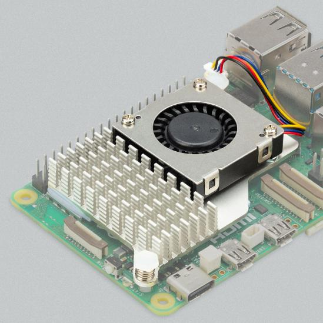
Arrefecimento dedicado para manter estabilidade térmica durante respostas de IA, voz sintetizada e uso contínuo.
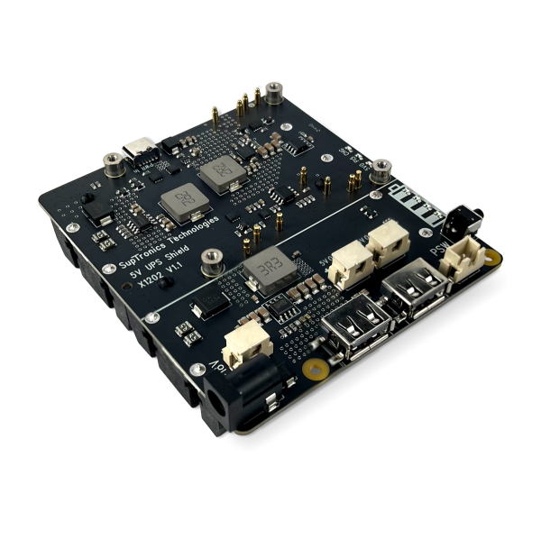
Módulo de alimentação com proteção e mobilidade, ligado ao Raspberry Pi pelos pinos GPIO.
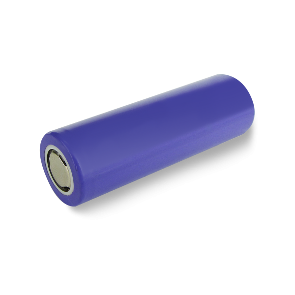
Células de íons de lítio instaladas no UPS Hat para autonomia fora da tomada.
Entrada de áudio plug-and-play usada para ativação por voz, gravação da fala e transcrição local.
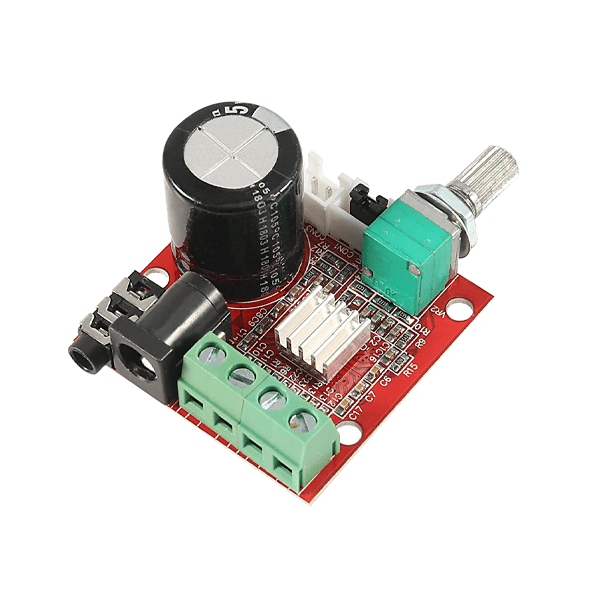
Amplificador classe D com controle físico de volume para alimentar o alto-falante do assistente.
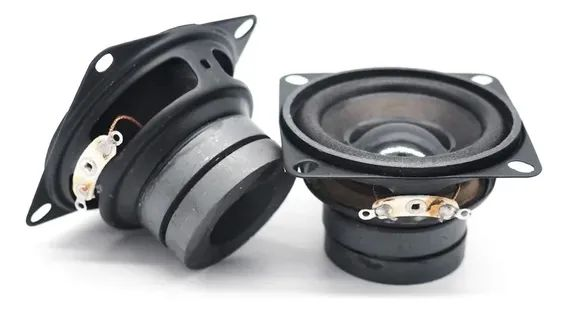
Transdutor de saída responsável pela voz sintetizada e pelos sinais sonoros de interação.
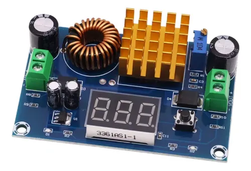
Eleva a tensão do subsistema de áudio para atender a alimentação exigida pelo amplificador.
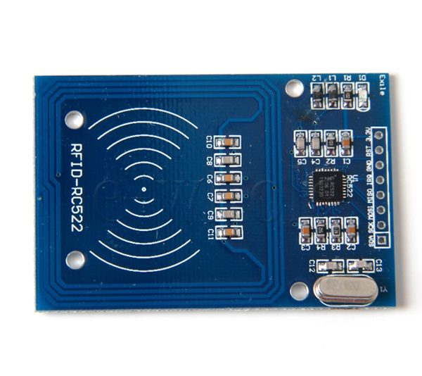
Módulo SPI usado para identificar cartões físicos e alternar perfis de usuário.
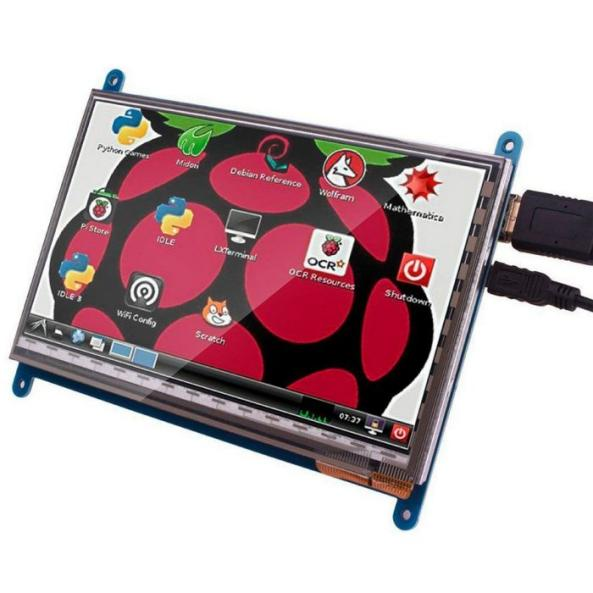
Interface touch principal de operação, exibindo chat, avatar, tradução e telas administrativas.
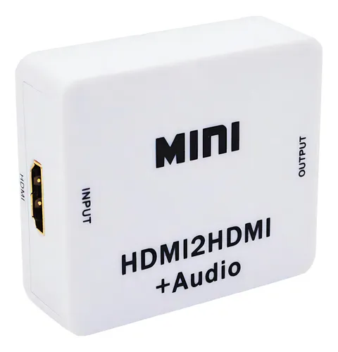
Converte o sinal HDMI para saída analógica, contornando a ausência de P2 no Raspberry Pi 5.
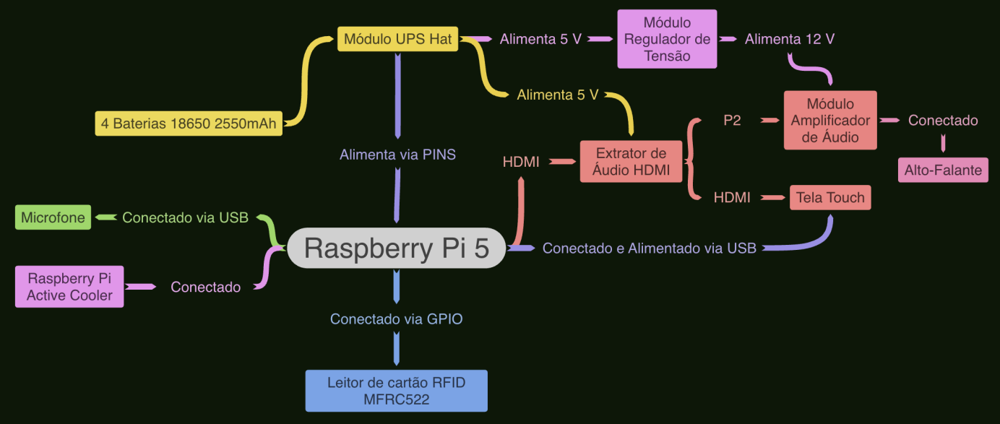
Visão geral das ligações entre microfone, placa principal, modelos de IA, banco local, RFID, tela, energia e saída de áudio.
O gabinete foi redesenhado para acomodar o empilhamento real dos componentes: tela de 7", alto-falante, ventilação, placa principal, módulo de energia, RFID e cabos. A carcaça foi impressa em PLA e pensada em três partes principais: frente, tampa traseira e alça de transporte.
A proposta partiu de um objeto compacto de mesa, com proporção próxima a um rádio portátil.
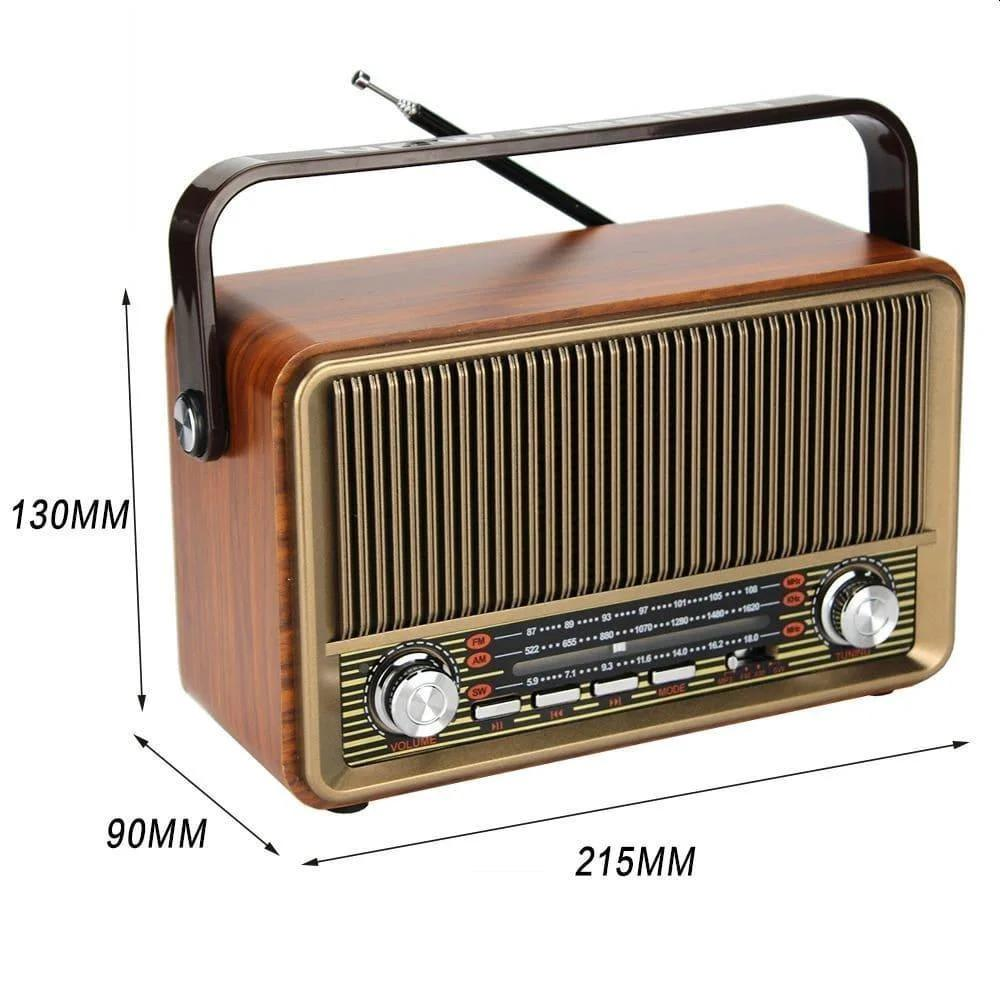
O desenho definiu alça, tela frontal e volume interno antes da modelagem detalhada.
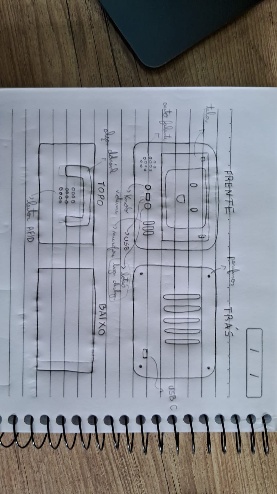
O modelo em CAD consolidou recortes, inclinação da tela, ventilação, alça e encaixes dos módulos.
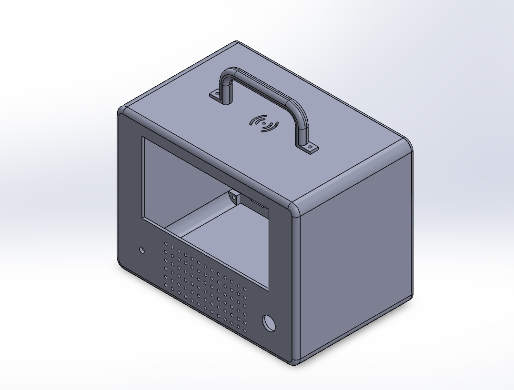
O gabinete branco validou dimensões, posição da tela, acesso interno e passagem dos cabos.
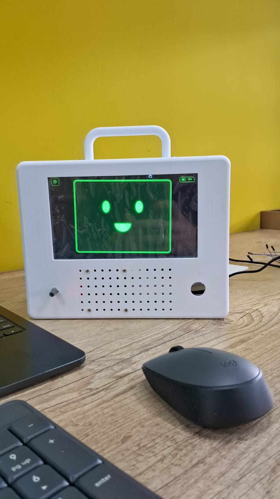
As peças receberam lixamento, acabamento e pintura verde e preta antes da montagem final.
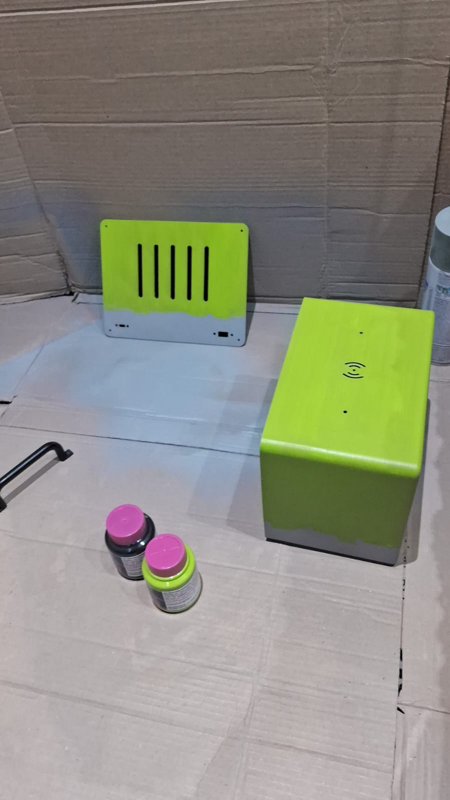
Com os componentes instalados, o protótipo final reuniu tela, áudio, RFID, ventilação e acessos externos.
O software foi construído em Python com arquitetura modular. A interface web roda localmente em tela cheia, enquanto o orquestrador integra wake word, VAD, STT, LLM, TTS, banco de dados local, perfis, memória, tradução e RAG.
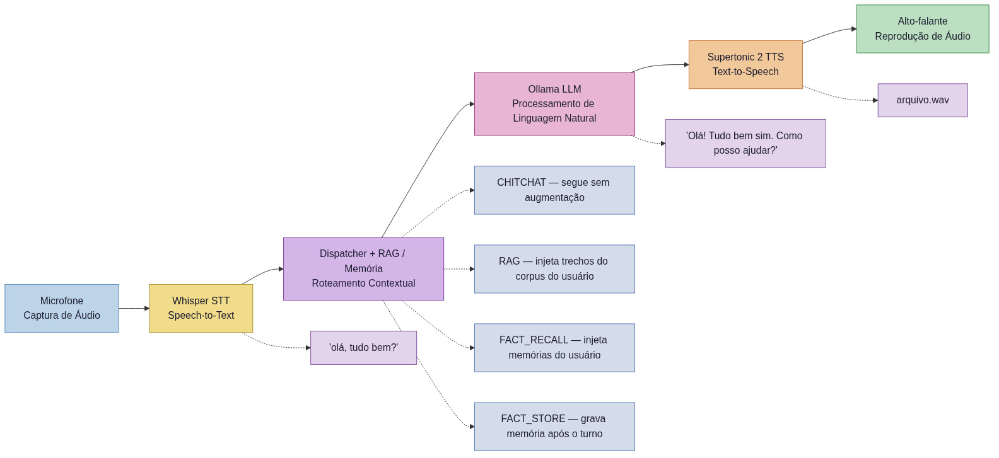
O sistema monitora "hey buddy", usa VAD para iniciar a captura quando há fala real e aplica calibração dinâmica de ruído para evitar gravações sem conteúdo.
O áudio vira texto por STT e o LLM escolhido nos testes responde com contexto, idioma e preferências do perfil ativo.
As frases completas são enviadas ao TTS em paralelo à geração do texto, reduzindo a espera percebida pelo usuário.
As primeiras telas eram objetivas e utilitárias: menus de administração, cadastro de usuários, edição de perfil e confirmação de ações. Essa fase ajudou a validar o banco de dados local, o fluxo de usuários e a configuração de personalidades antes de chegar ao visual final.
A interface final reúne avatar animado, chat incremental, teclado virtual, modo tradutor, bases de conhecimento por RAG e telas administrativas para usuários. Ela foi pensada para uso direto na tela touch de 7 polegadas.
Esta é uma versão web do Talking Buddy para demonstrar a conversa, o avatar e a lógica do projeto diretamente no site. O protótipo físico continua sendo o foco do TCC; aqui, você pode testar uma experiência parecida pelo navegador.
A validação combinou testes de caixa-preta, voltados à experiência do usuário, e testes de caixa-branca, voltados ao comportamento interno do fluxo, consumo de recursos e estabilidade do hardware.
Registros do processo de construção do protótipo, reunindo bancada de hardware, evolução do gabinete físico e apresentação final do TCC.
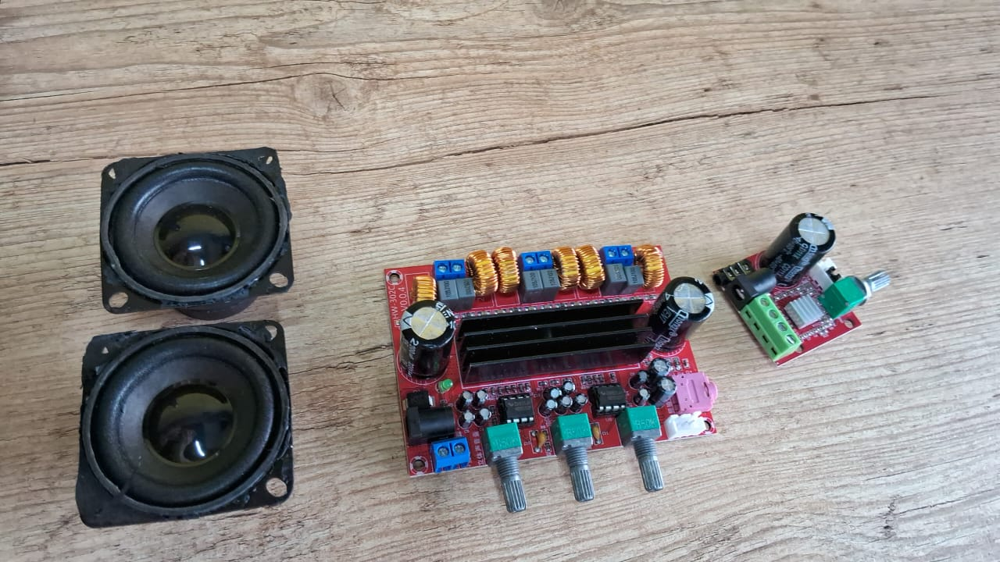
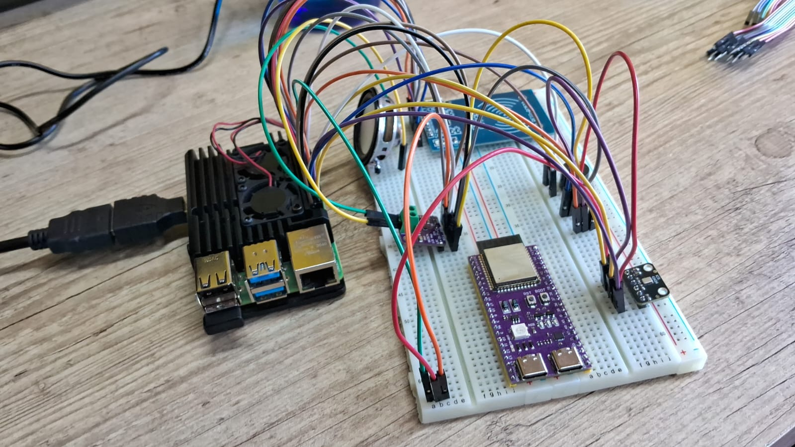
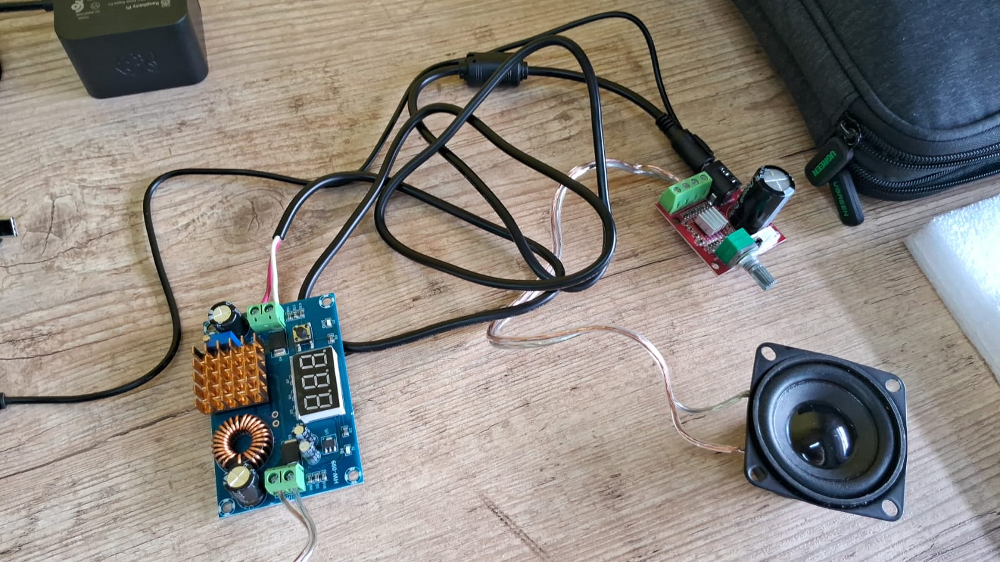
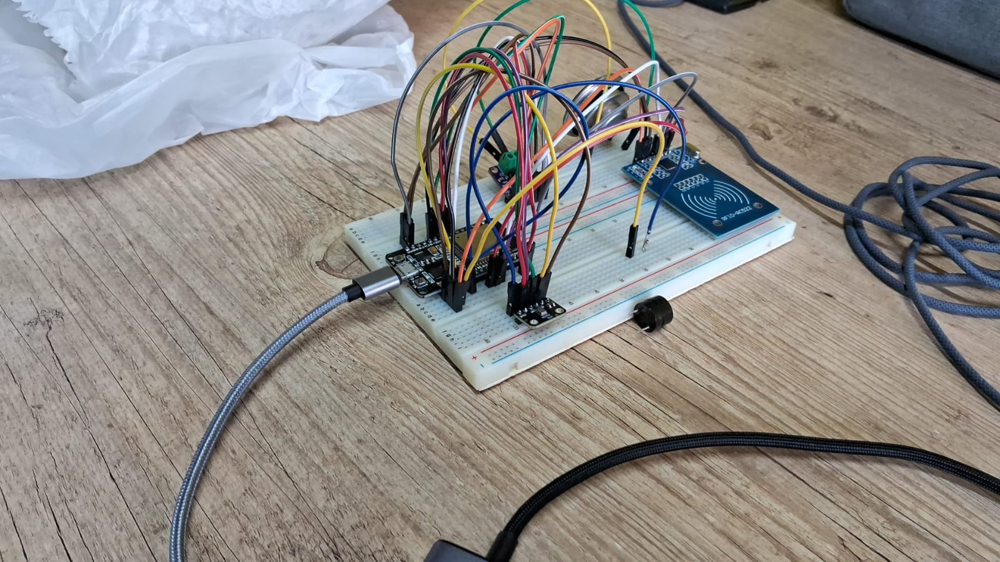
O Talking Buddy foi desenvolvido como Trabalho de Conclusão de Curso na PUCPR, unindo pesquisa aplicada, prototipagem física, software embarcado e validação experimental.